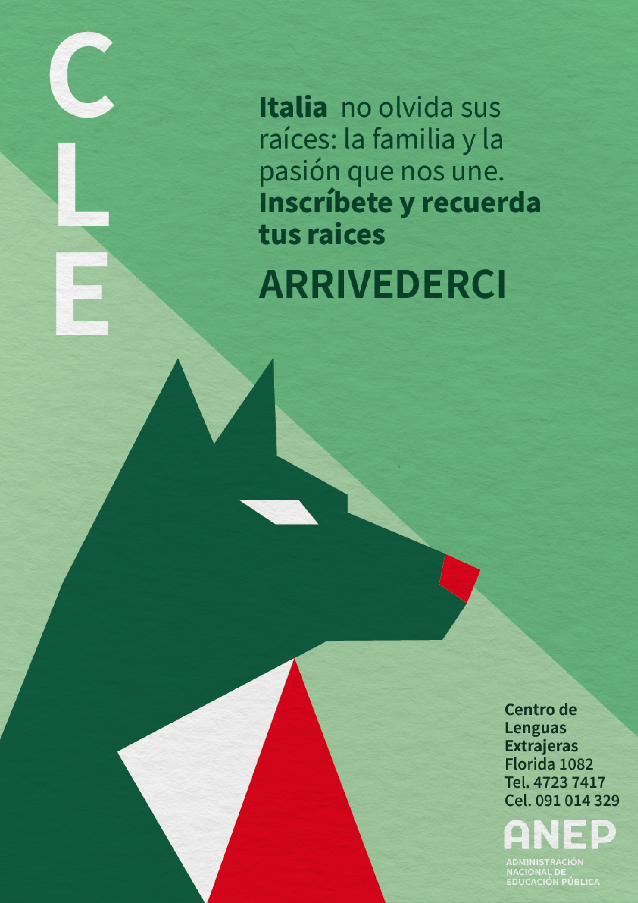
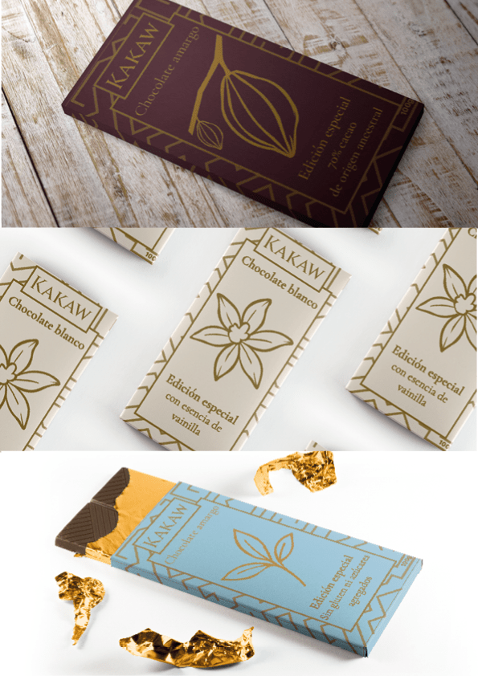
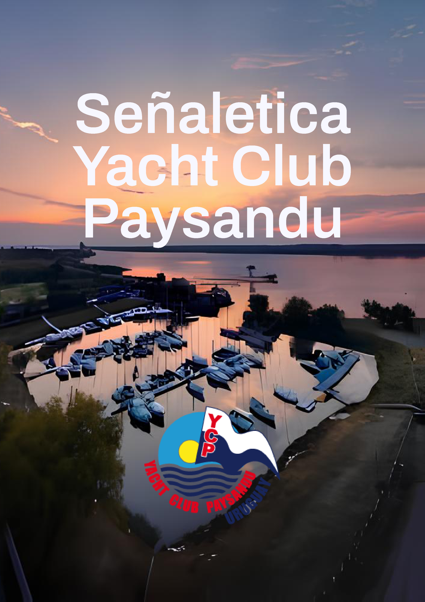
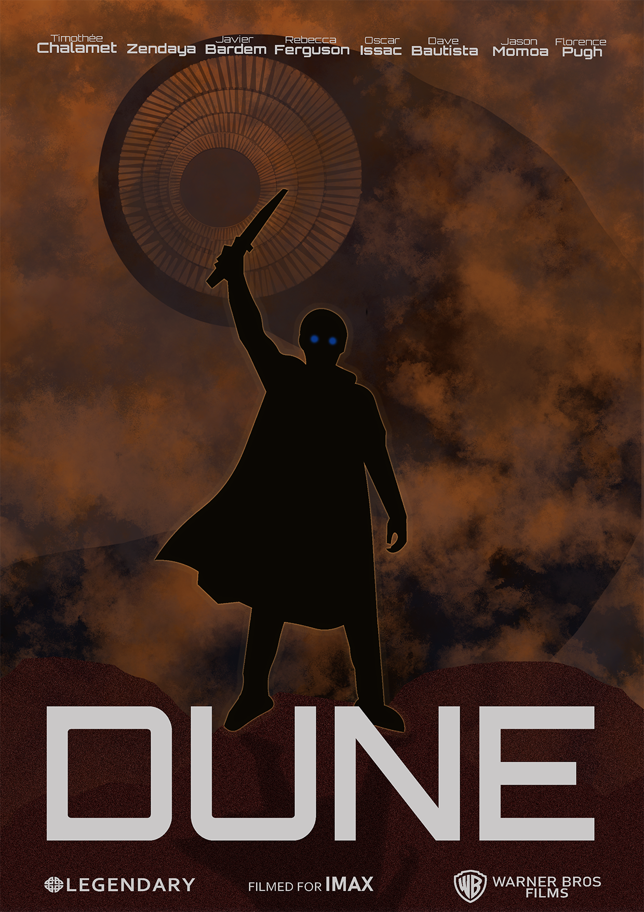

TRABAJOS

Afiches Urbanos

Portadas de libros

Diseño de packaging
Diseño de identidad

Señaletica

Más trabajos
Hola, soy André Chéchile, diseñador gráfico. Este portafolio reúne una parte de mi recorrido: proyectos, exploraciones y procesos que cuentan cómo veo y entiendo el diseño. Creo en el poder de la imagen como lenguaje, en las historias que se pueden construir con color, forma y tipografía. Gracias por pasar, espero que encuentres algo que te inspire.
Mi misión es crear soluciones visuales que unan estética y funcionalidad, ayudando a comunicar mensajes de manera efectiva, clara y memorable. Busco transformar ideas en piezas gráficas que generen impacto, ya sea en formato digital o impreso, manteniendo siempre un enfoque estratégico que responda a los objetivos del proyecto. Trabajo con dedicación, atención al detalle y sensibilidad creativa, aportando valor mediante propuestas visuales que no solo se vean bien, sino que realmente conecten con las personas.
Mi visión es consolidarme como un profesional del diseño gráfico capaz de abordar diversos estilos, formatos y necesidades visuales. Aspiro a desarrollar proyectos que inspiren, que aporten soluciones creativas a problemas reales y que exploren nuevas formas de comunicación visual. Busco crecer constantemente, experimentar, aprender y adaptarme a las tendencias sin perder mi identidad creativa. Deseo construir un camino profesional donde cada proyecto sea una oportunidad para narrar historias, despertar emociones y mejorar la experiencia visual de quienes interactúan con mis diseños.
Afiches Urbanos
Portadas de libros
Diseño de packaging
Diseño de identidad
Señaletica
Más trabajos